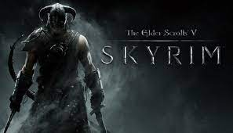

The Elder Scrolls: skyrim
A timeless classic created by Bethesda. This game is based in a world where magic, dragons, and prophecies are real life.
You can create your own character with fully customizable facial features, race, and name. It's an open world game that has a main quest, but you often forget about that just given the sheer
size of the world you are thrown into. With hundreds of different side missions and an almost infinite amount time you can spend in the game you create the character you want to be in the best RPG
game ever made. After being released 12 years ago, Skyrim fans have taken to modding the game with their own graphics, incorporating ChatGPT to non-player characters, and essentially adding onto an already
masterpiece. This allows the game to live on for so long and still have fans coming back to this game after so long.
